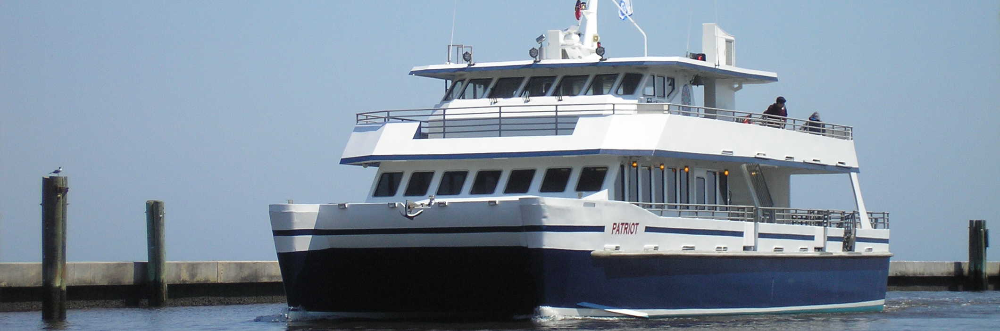

Bald Head Island Ferry Information

Bald Head Island is a unique destination that can only be accessed by boat; and transportation on the Island is by golf cart, bicycle or your own two feet.
Bald Head Island passengers will depart the mainland from Deep Point Marina at 1301 Ferry Drive Southport, NC. The ferry will depart the mainland on the hour and the ride will last about 20 minutes.
Be sure to have your cameras ready because the ride to Bald Head Island is picture perfect.
Whether you’re traveling in the summer or winter, be sure to check the schedule for ferry departure times from and to the Island. Deep Point Marina offers a comfortable waiting lounge with the Island Times Café (open seasonally), an outdoor sitting area and restrooms.
Tram services are included with a General Passenger ticket. Transportation by tram will take you to your Island home and back to the ferry after your stay.
Make your tram reservations well in advance, as seats may be limited. Having a tram reservation does not guarantee you a seat on the ferry, so be sure to arrive at least 30 minutes before your scheduled ferry departure time. When departing the Island, your tram will arrive 25-45 minutes before your ferry departure time.
Schedule Tram Reservations:
How to Pack for Your Bald Head Island Trip
Bald Head Island Transportation, Inc. ferries carry hundreds of thousands of passengers to and from the Island annually, many of them with baggage. Baggage may be loaded onto a conveyor belt and onto ferry dollies for processing. While you’ll need to pack some necessary essentials for your visit, you’ll find many of the businesses on the Island offer perishable items and items for rent or purchase as well as various services that can allow you to pack lighter and more efficiently. For your convenience, and in an effort to keep the ferry operations running smoothly and on time, we offer the following baggage and packing requirements:
Checked baggage:
- All items must be in a covered container, suitcase or zipped bag to be accepted by dock personnel.
- Open-topped and unsecured items will not be accepted as checked baggage.
- Loose items such as toys, clothing, bedding, food, cell phones, cameras, laptops, etc. must be contained in a closed bag or container or hand-carried. Glass containers or other delicate items must be suitably packed inside baggage or must be hand-carried. Beach chairs must be suitably packed or wrapped. (They are available for rent or purchase on the Island.)
- Checked items must not require more than one person to safely handle.
- All checked baggage must be tagged by the owner prior to acceptance by dock personnel. Baggage tags are available at the terminal and must include a name, local phone number, date and time of ferry departure.
Carry-on items:
- You may wish to carry smaller items on board. Carry-on items should be consistent in size and volume as airline carry-on items.
- To assist passengers with complying with checked baggage requirements, plastic container tubs are for sale for a nominal fee at the Deep Point Ferry Terminal ticket window.
- Although Bald Head Island is a natural playground for outdoor activity, we encourage you to rent certain overweight or oversized items such as bikes, kayaks, surfboards, standup paddleboards, etc. from an Island business.
- If you find you must bring overweight or oversized items, they may be accepted with an Excess Baggage Ticket for $23. Space on the ferries is limited; therefore, it is possible that during peak periods certain larger items will not be transported on the same ferry as passengers. Every effort will be made to transport these items within six hours of the guest’s ferry time.
- Bikes, kayaks and the like will not be transported in trams due to size, sharp edges and/or grease. These items may be claimed at the Island Ferry Terminal and transported by the owner using a golf cart provided with the accommodations. When departing the Island, bikes should be brought to the Island Ferry Terminal no later than the evening prior to departure. Failure to do so may result in delays receiving your item upon your departure.
Excess Baggage:
Please note that there may be an excess baggage charge for some passengers. Each passenger is allowed up to 6 checked items with the purchase of a regular ticket. More than 6 items can be checked for an additional $5.00 per bag (current as of 2015). Note that, in accordance with NC Utilities Commission Docket NO. A-41, SUB 9, “No allowance shall be permitted on tickets purchased for the sole purpose of avoiding payment of Excess charges.”
Any oversized items must be checked, not carried on. An example of an oversized item would be a bike, a large surfboard or anything over 7 feet long. Oversized items checked will incur a charge of $23.00 each (current as of 2015).
Items not allowed on ferries:
- Furniture must be transported via Bald Head Island Limited’s barge and special arrangements must be made. Barge reservations may be made by calling 910.457.5205.
- Car-op carriers (hard or soft) will not be transported aboard the ferry. The above information is not all-inclusive. Items may be denied passage in the interest of safety and reliable performance at the discretion of the Shift Supervisor or Ferry Master. Please read the baggage loss and damage policy printed on the back of your ferry ticket. And please remember: Pack as if you were taking a flight to your vacation.